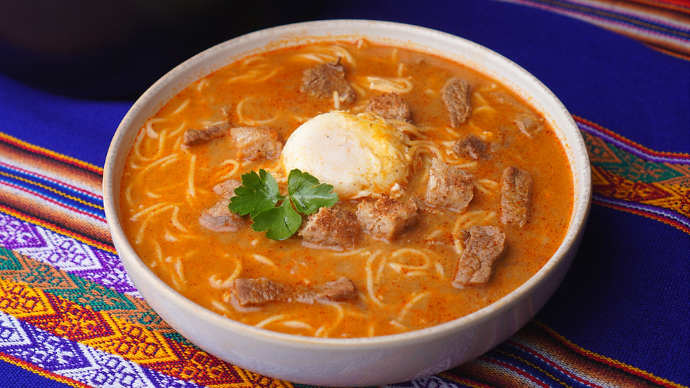

Sopa a la Criolla

Description: Sopa a la Criolla is a hearty, comforting Peruvian soup made
with ground or thin-sliced beef, angel hair pasta, milk, and classic
Peruvian spices, all topped with a fried or poached egg and crunchy
croutons.
Ingredients:
- Beef: 1/2 pound ground beef or finely diced sirloin steak.
- Ají panca paste: 2 tablespoons of mild, smoky red chili paste.
- Aromatics: 1 finely chopped red onion and 3 minced garlic cloves.
- Tomatoes: 1 small tomato, peeled and finely chopped.
- Stock: 4 to 5 cups beef broth.
-
Pasta: 4 oz angel hair pasta (cabello de ángel) or thin spaghetti,
broken in half.
- Dairy: 1/2 cup evaporated milk.
-
Herbs & spices: 1 teaspoon dried oregano, ground cumin, salt, and black
pepper.
-
Toppings: 2 to 4 eggs (poached or fried) and toasted bread slice or
croutons.
-
Optional additions: Ají amarillo paste for subtle heat or fresh cilantro
for garnish.
Steps:
-
Sauté beef and base: Heat vegetable oil in a soup pot over medium-high
heat. Add the beef, season with salt, pepper, and cumin, and cook until
browned. Remove meat and set aside.
-
Prepare the aderezo: In the same pot, add the onions, garlic, diced
tomato, and ají panca paste. Cook over medium heat for 5 minutes until
soft and fragrant.
-
Build the broth: Return the browned beef to the pot, pour in the beef
broth, and bring to a simmer for 10 minutes. Crush the dried oregano
between your palms and stir it into the soup.
-
Add pasta: Add the angel hair pasta to the simmering broth and cook for
3 to 4 minutes until al dente.
-
Incorporate milk: Turn off the heat and gently pour in the evaporated
milk while stirring continuously.
-
Serve and top: Ladle the hot soup into deep bowls. Top each bowl with a
fried or poached egg and serve with toasted crusty bread.
Home